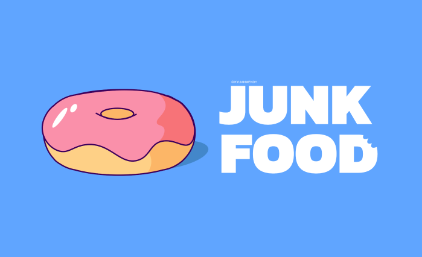
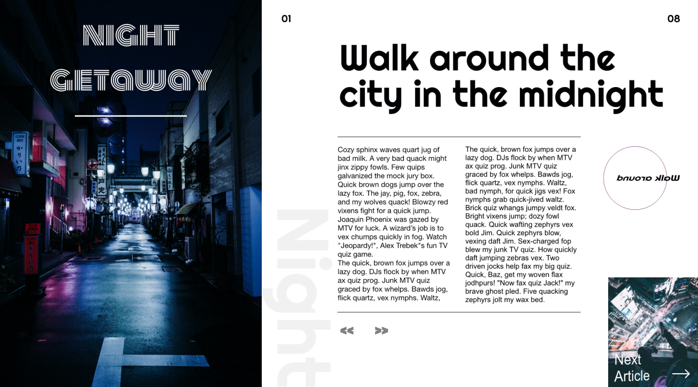
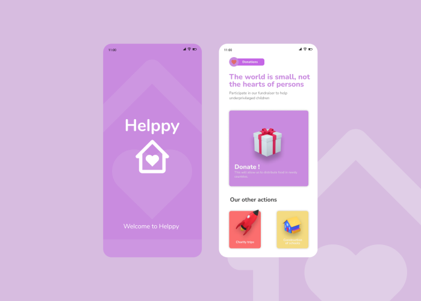
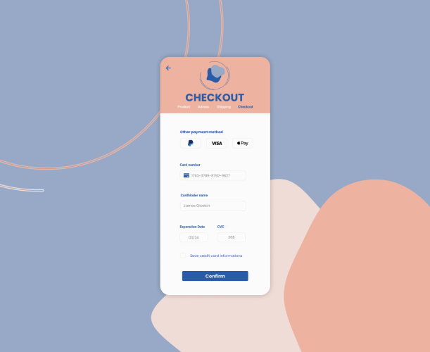
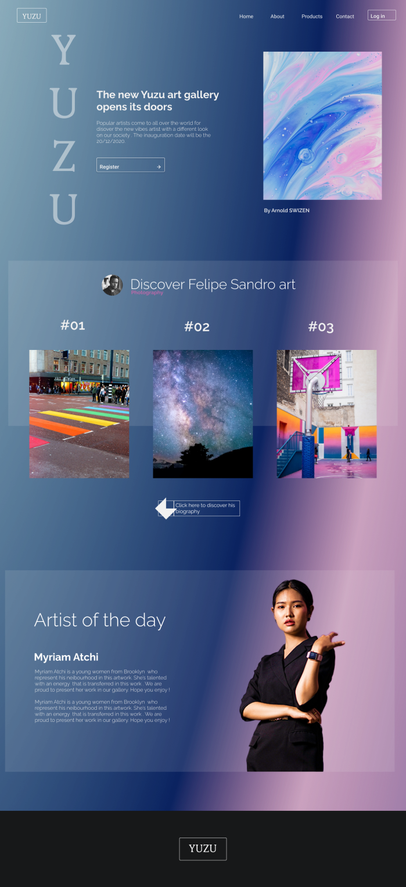
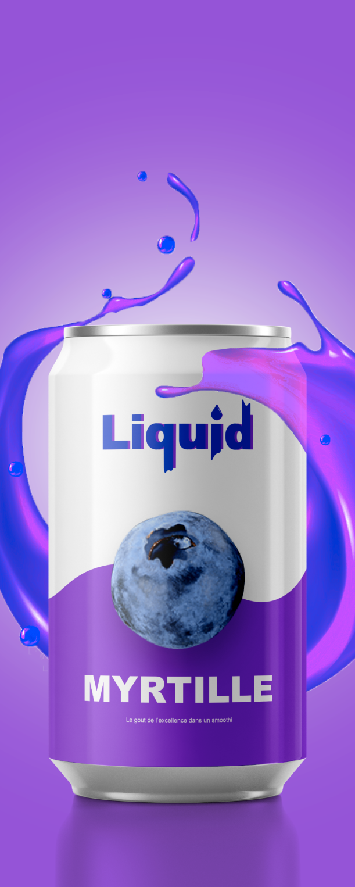
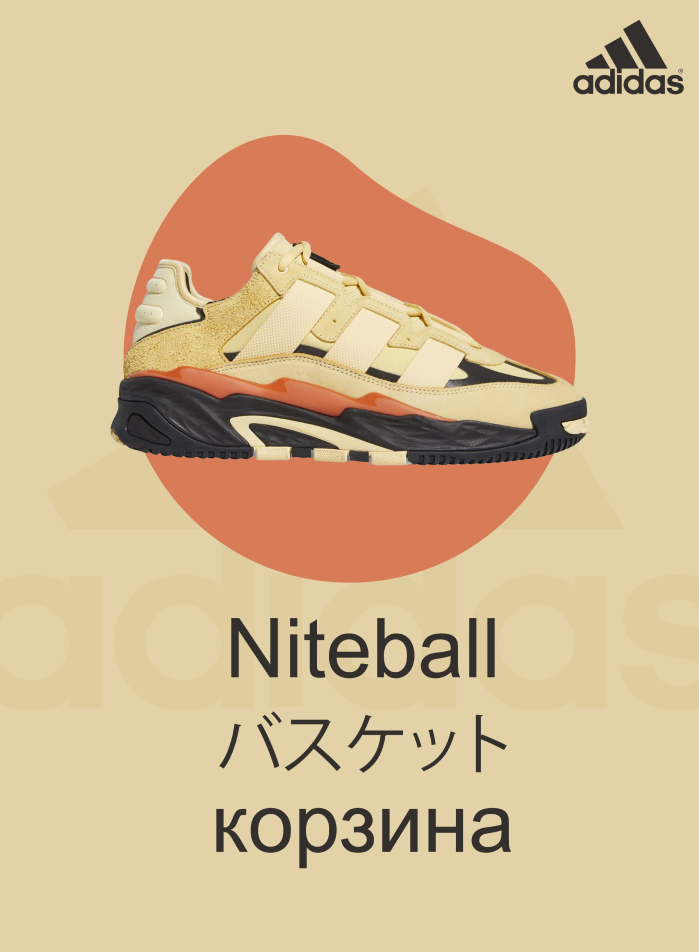
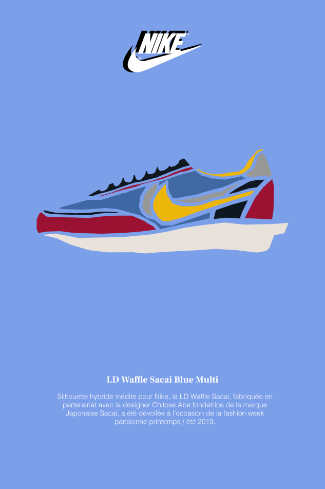

Voici ci-dessous d’autres projets que j’ai réalisé qui sont liés de près ou de loin a l’univers du web design . Ces différents travaux m’ont permis de gagner compétence sur différents logiciels et d’exprimer ma créativité !







